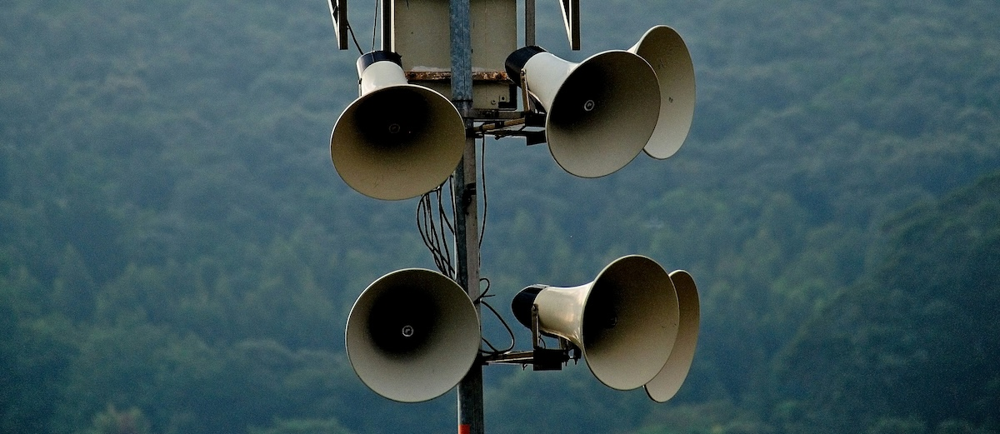

Four weeks update
• Content by Mauricio Wolff • Photo by Andrew Valdivia
So... four weeks into this. Feeling good.
Energy levels came back to normal. I'm thinking it's probably just an adaptation thing, the body is amazing at adapting and then it's suddenly the new normal.
Few things I can be sure about:
No more cravings. After one month, those cravings for sweets, or snacks, goes away. If I eat fat enough, I can go hours without a meal feeling good, and don't feel any urge to eat whatever.
Too much fat can be a thing. The best counterpart: sparkling water. And how to know when it's too much: if you feel a bit nausea, sparkling water solves it, and a bit of time. If you really had too much animal fat, you'll run to the bathroom session, so if it's not that, you're good.
Focus, focus, focus. I'm always amazed, because it's not the first time, how much focus is available when you're in Ketosis. Doesn't need to be carnivore, just keto in general. I can focus on solving things and get them done way faster than when not in ketosis. This is probably the most rewarding thing, I'm getting more of my ideas and plans out and executed in days than in the previous months.
So yeah, in general, I think I'm going well. I was able to release and improve bit, an open source project for
Next steps
Now that adaptation is not an issue anymore and I'm feeling it gets easier and easier to eat only meat, I'll start to reintroduce stuff.
Fruits once a day, as well as other foods, slowly, observing the effect, and adapting the diet. I'm not on this journey to become a carnivore for life, I'm doing this experiement to see what works best for me and keep doing it. 👍